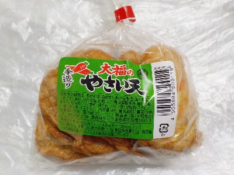
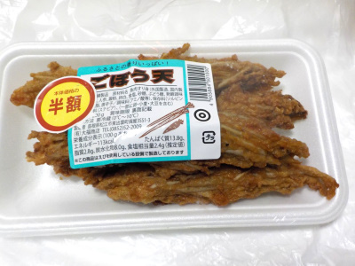
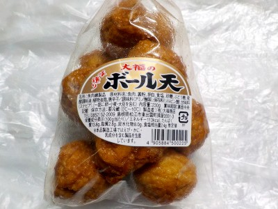

いいものを探そう ～出雲らへん～
島根県松江市東出雲町揖屋3551-3
2025/03/22
大福商店の手造りやさい天。

手造りのせいなのか、いろんな形の天ぷらが入っていました。天ぷらが柔らかかったので、成形するのか難しかったのかなと勝手に想像しながら食べました。
柔らかいのでちょっとハンペンっぽいなと思いました。味付けがしっかりあり野菜や魚感は少なかったです。おつまみに向いてるかな。
【大福商店TOP】
【地域TOP】
【HPTOP】
2024/01/10
大福商店のごぼう天。

ゴボウが沢山入ってて、ゴツゴツした感じのゴボウ天です。
天ぷらがジューシーで、旨みたっぷりで美味しかったです。
オカズにもオツマミにもなる味だと思いました。
【大福商店TOP】
【地域TOP】
【HPTOP】
2022/02/24
大福商店のボール天

おでんに入れそうな天ぷらですが、そのまま食べました。
ボール状なので切らずに食べれていいですね。とても食べやすい。
濃い味の天ぷらで美味しかったです。普通に食べるのもいいし、お弁当のおかずにするのもいいかなと思いました。
【大福商店TOP】
【地域TOP】
【HPTOP】
【『松江市らへん』の他の情報はこちら】
【おいしいものを食べよう。】【たくさん寝よう。】
【ソロ活をしよう!】【季節感のあることをしよう。】【動画視聴はほどほどに。】【当サイトの全てのコンテンツは無断転載禁止です。】